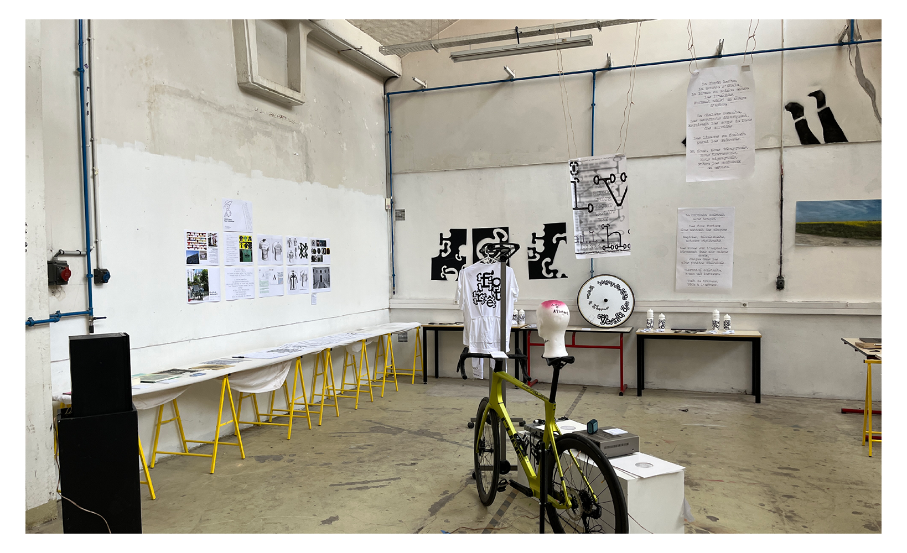
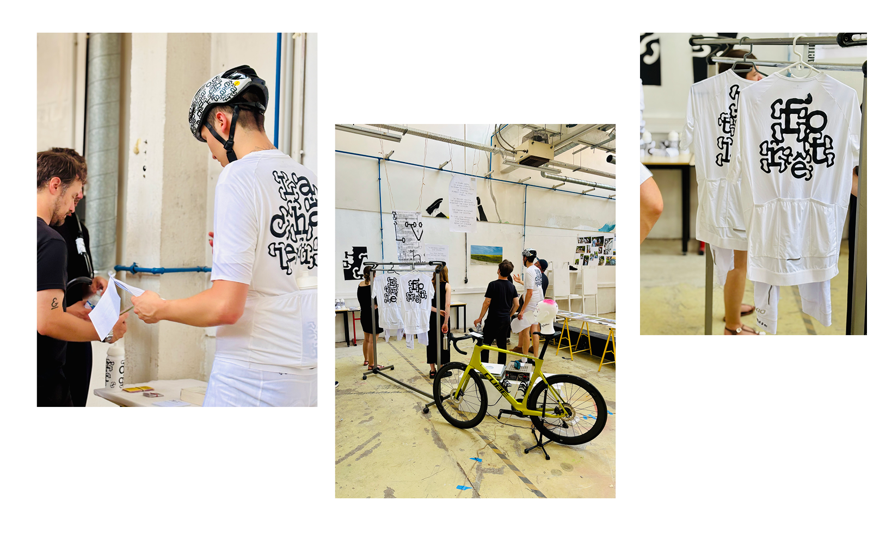

Projet Made
2026
2026




Mon projet, « Sans un mot », explorait la poésie du geste silencieux, notamment à travers le vélo.
L’objectif était de faire découvrir à des non-cyclistes les sensations de ce sport, en mettant en avant la nature, le bruit et le bien-être qu’il procure.
Destiné aux cyclistes amateurs et aux curieux.
Le projet utilisait le tissu comme narrateur silencieux, porté et déplacé par le corps.
Trois résultats clés :
• un site web HTML pour partager les poèmes et la philosophie du projet
• Trois typographies
• Des flocages sur textiles et équipements (vélo, bidons),
• Une installation immersive.
Le silence, espace partagé et forme de connexion a montré que le design peut raconter une histoire autrement qu’avec des images :
par le mouvement, le silence et les mots portés par le corps.
Nous devenons tous des poètes cyclistes en portant cette philosophie.